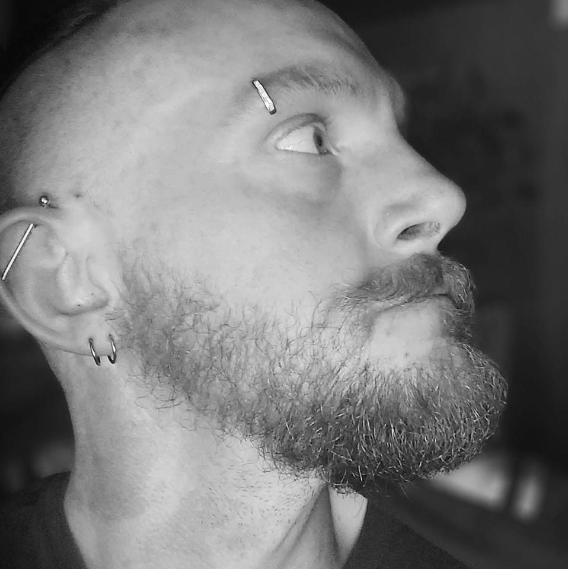
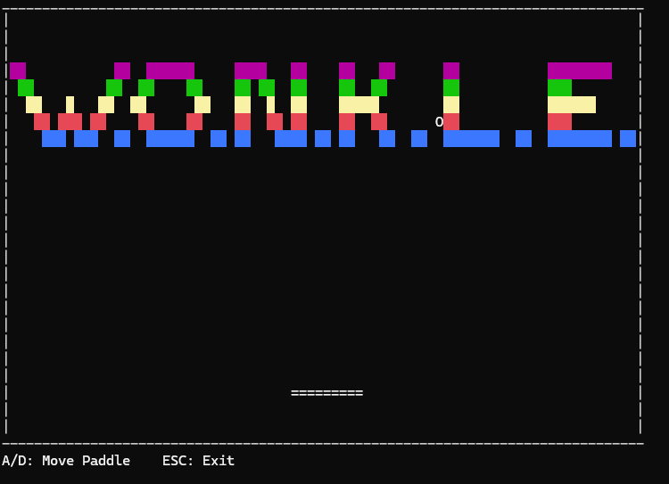

Languages
C++, HTML, CSS, GDScript, Blueprint Visual Scripting
My Portfolio
I'm a game developer focused on building creative, scalable systems and interactive experiences. I enjoy exploring the intersection of programming, game design, and procedural generation, with an emphasis on developing flexible tools that empower creativity. I'm currently pursuing a bachelor's degree in Game Design at Full Sail University.

About Me
My path into programming started with a love for video games and an interest in understanding how things work behind the scenes. As I began learning to code, I found that I enjoyed more than just making things work. I liked breaking down complicated problems, experimenting with different approaches, and finding ways to make systems work together. Through my education at Full Sail University, I've developed a stronger foundation in programming, software architecture, and game development. Projects like Wonkle have given me the opportunity to take what I've learned and apply it to larger challenges, pushing me to think beyond individual features and focus on how entire systems are designed.
C++, HTML, CSS, GDScript, Blueprint Visual Scripting
Visual Studio, Visual Studio Code, Git, GitHub, CMake, PowerShell, MSYS2, Unreal Engine, Godot, GameMaker, Blender, Audacity, OBS, Photoshop, Microsoft Office
Object-oriented programming, debugging, modular scalable systems that prioritize flexibility, and clean code
Behold, My Stuff
A collection of projects, experiments, and ideas I've brought to life through code. Each one represents something I've built, learned, broken, fixed, and improved along the way.

C++ Console Application
Wonkle is a tool designed to make building systems easier by letting users create rules and decide how different parts of a program behave without having to write new code every time. Instead of programming every action directly into the software, Wonkle uses external files to store instructions that tell it what to do. This makes it easier to change, reuse, and expand projects without rebuilding everything from scratch. While I'm currently testing it through game development, the goal is to make Wonkle useful for much more than just games.
One of my biggest challenges was getting Wonkle to read and interpret JSON files correctly. I wanted users to be able to control how the framework works through external files rather than hardcoding everything. Getting the files to load, parsing their contents, and connecting that data to the right parts of the program took a lot of troubleshooting. I learned how important it is to separate data from code and how much planning goes into building a system that can grow without constantly rewriting it.